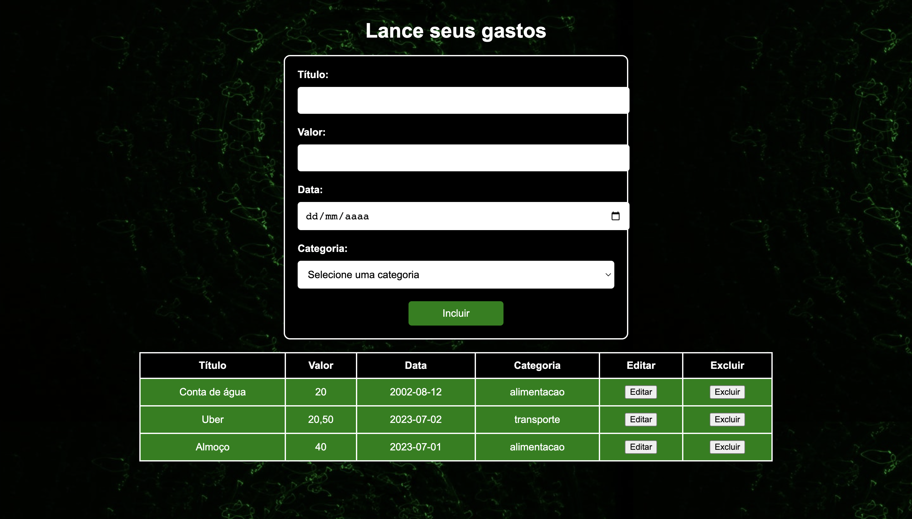

Cadastro de Despesas Fixas
Gerencie suas despesas recorrentes, como aluguel, contas de serviços públicos e assinaturas.

Registre todas as suas despesas para acompanhar seus gastos diários e mensais.
Gerencie suas despesas recorrentes, como aluguel, contas de serviços públicos e assinaturas.
Registre suas receitas de salário, rendimentos adicionais e outras fontes de renda.